If you want to see tutorial in a separate web browswer window click here.
Moving Player
We have looked at Variables, Functions and Data Types Now we are going to look at conditional if statements. This is used all of the time. One of the next times we will see it will be for determining user input. Has the user pressed a button on the keyboard? We use if statements to check this. We will be controlling the circle with the arrow keys.
Lets start by right clicking obj_circle and select Duplicate.
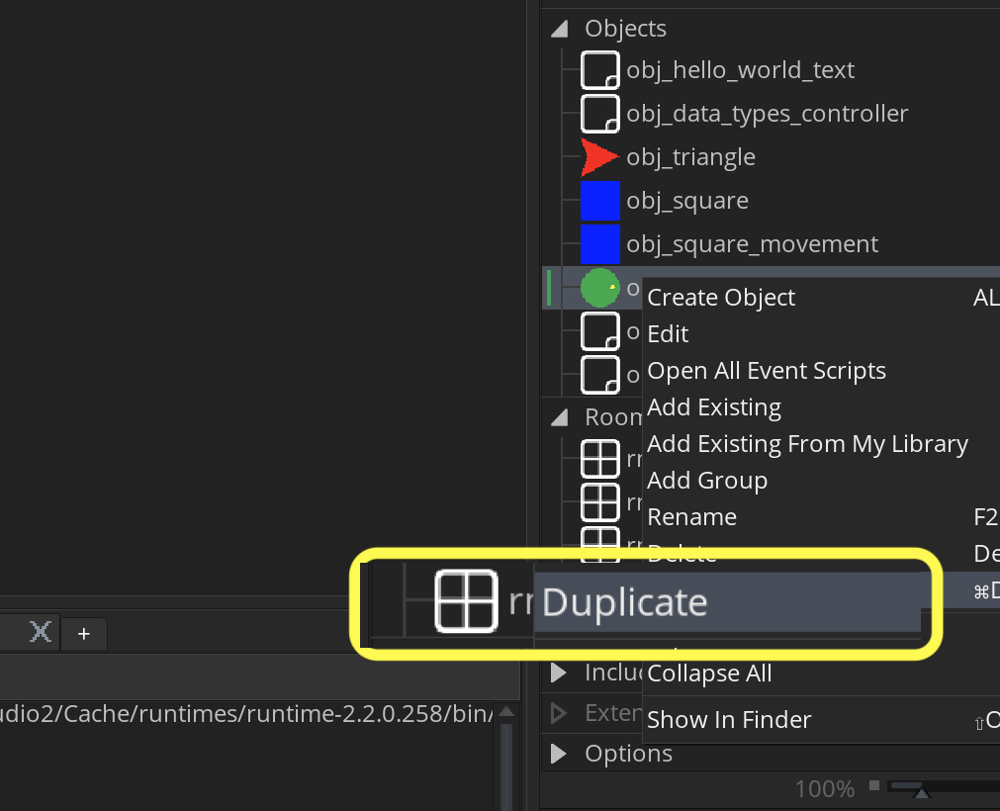
Call it obj_circle_movement.
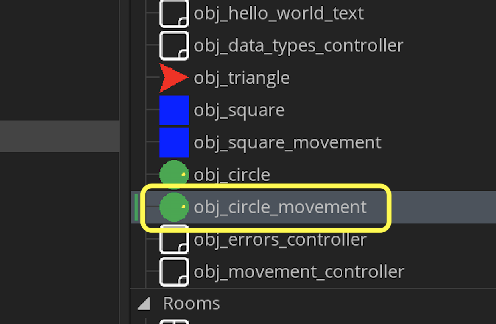
Open the Create event and center the object in the dead center of the room:
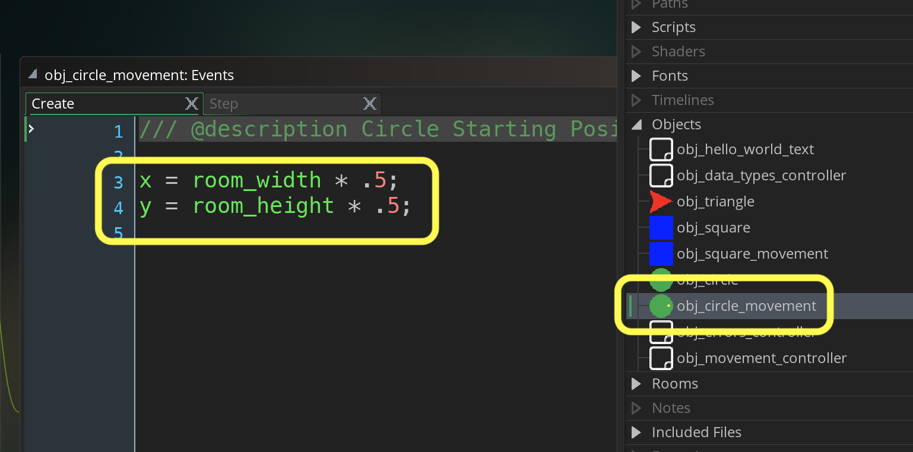
Drag and drop obj_circle_movement to the center of rm_movement.
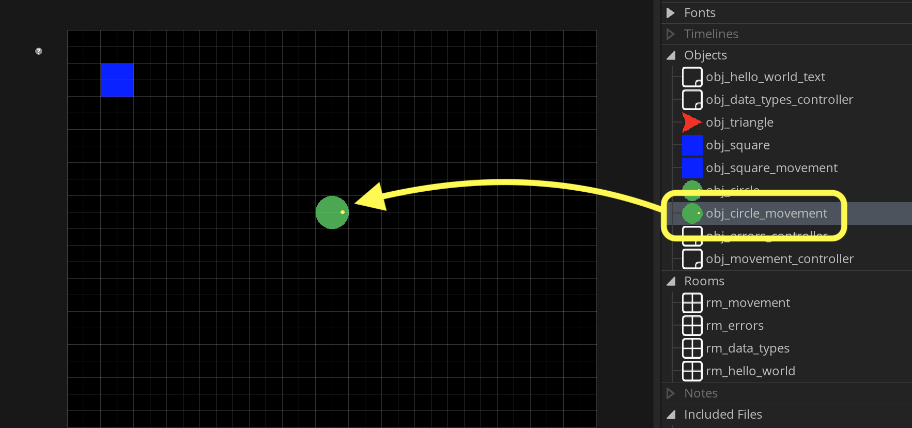
Run the game again by pressing the  Play Button. Now the circle starts in the center of the room:
Play Button. Now the circle starts in the center of the room:
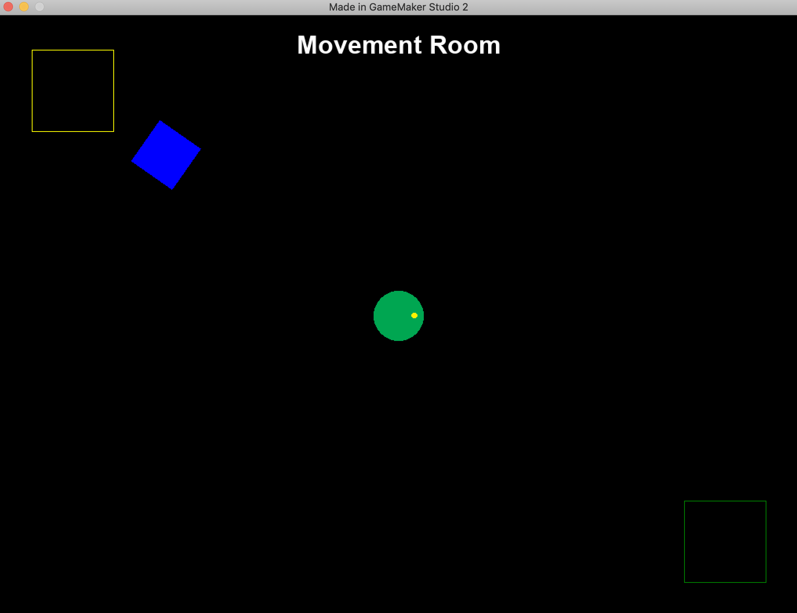
Press the Add Event button on obj_circle_controller and add a Step | Step event. Now we will look at keyboard_check(key) and will subtract the left key from the right key. Now if you remember keyboard_check(key) returns a boolean which will be 1 if true and 0 if false. This means if right is pressed it will be 1-0. If left is pressed it will be 0-1. If both right and left are pressed it will be 1-1. So this gives us a range of -1 to 1.
Lets prove it. We will do that with another new function show_debug_message(string). It will print this message in the Debugger Output window.
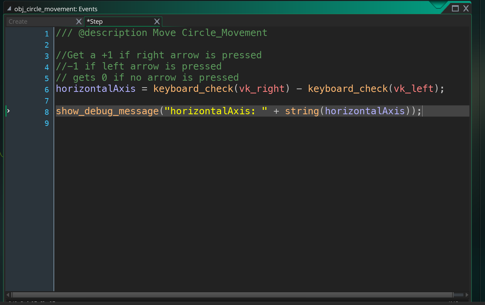
You should have an Output tab in the bottom. If you don't see it you can select Window | Output and it will appear in the bottom section (you might have to expand it to see it better).
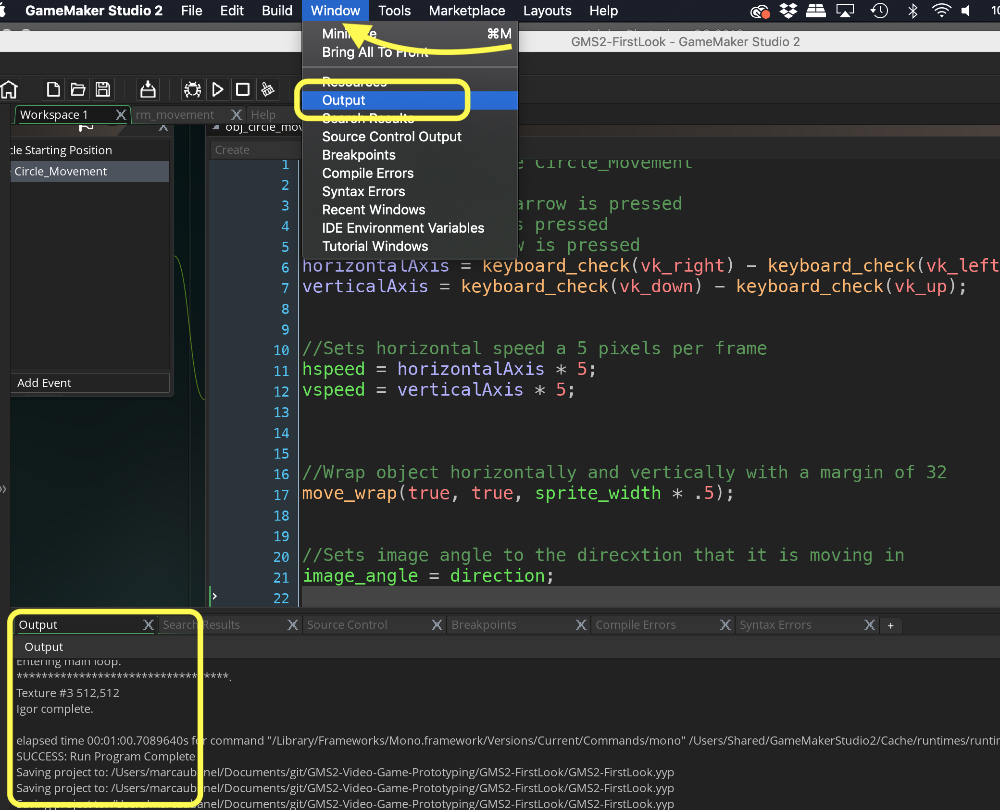
Run the game again by pressing the  Play Button. Look at the Output Tab and press the left and right arrow on the keyboard. The message should print and show either a -1, 0 or 1 as we figured.
Play Button. Look at the Output Tab and press the left and right arrow on the keyboard. The message should print and show either a -1, 0 or 1 as we figured.
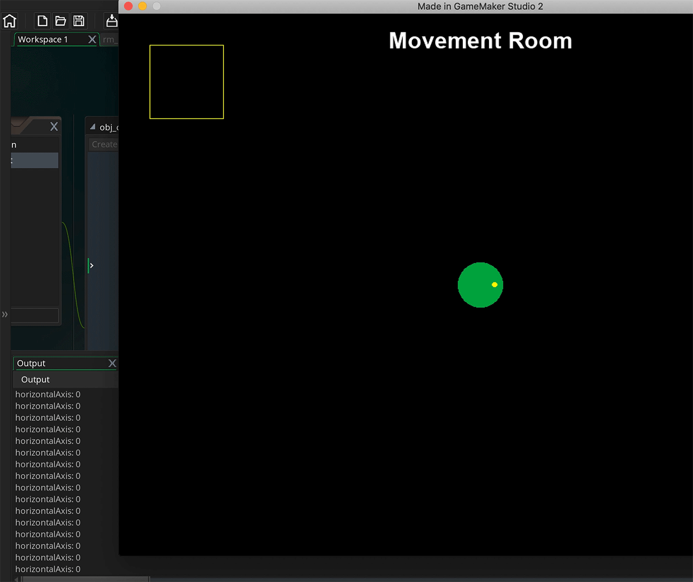
Repeat the for moving up and down by looking for the object moving up or down. Remember positive y is moving down so we subtract the up arrow from the down arrow. Lets print to output this result as well:
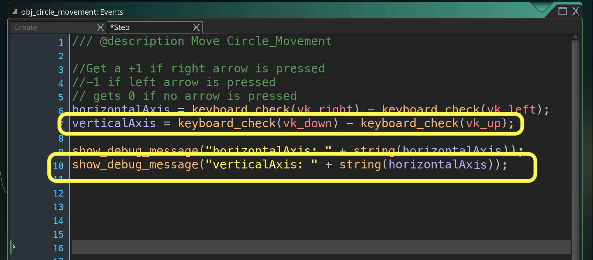
Run the game again by pressing the  Play Button. Look at the Output Tab and press the left, right, up and down arrow on the keyboard. The message should print and show either a -1, 0 or 1 for both horizontal or vertical movement.
Play Button. Look at the Output Tab and press the left, right, up and down arrow on the keyboard. The message should print and show either a -1, 0 or 1 for both horizontal or vertical movement.
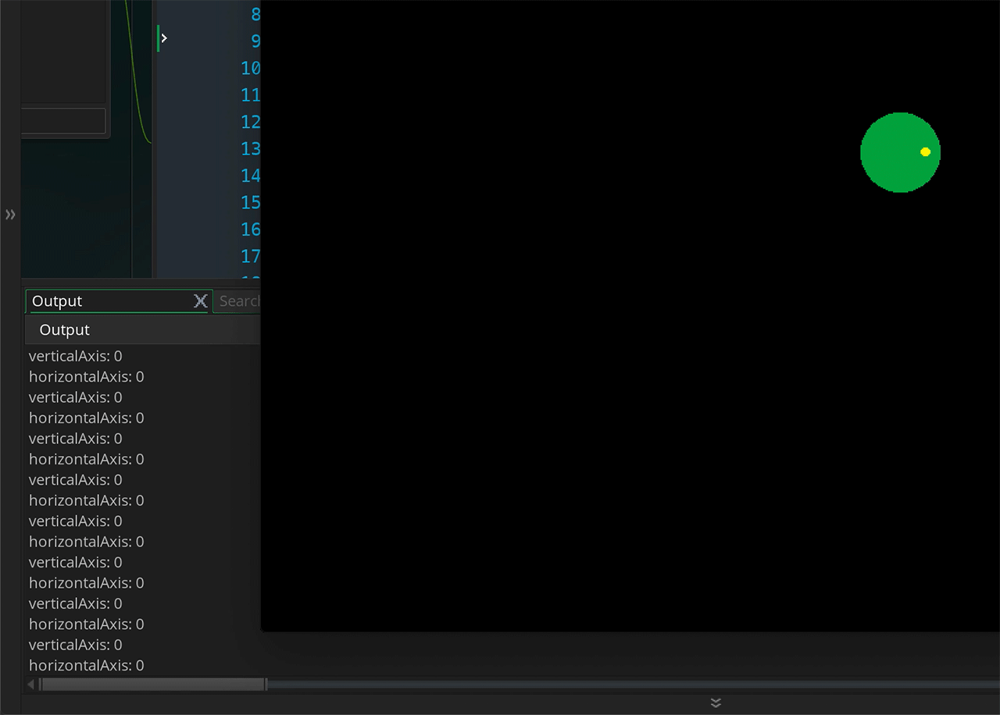
Now what is nice about having a range of -1 to 1 is that we can scale it by multiplying it. If we want to move at a speed of 5 we can multiply this value by 5 and it will range from -5 to 5. What we will do is set the movement component for each axis. This is through two variables that comes with every object. vspeed and hspeed
hspeed is one of the "built in" properties that all instances have and defines the horizontal movement speed (along the x-axis) of the instance in pixels per step. So, an hspeed of 3 means 3 pixels of movement to the right (+x) every step, and an hspeed of -3 would mean 3 pixels of movement to the left (-x) every step. - GameMake Manual
vspeed is one of the "built in" properties that all instances have and defines the vertical movement speed (along the y-axis) of the instance in pixels per step. So, a vspeed of 3 means 3 pixels of movement to the bottom (+y) every step, and a vspeed of -3 would mean 3 pixels of movement to the top (-y) every step.
Delete the two show_debug_message(string) functions and add to both the hspeed and vspeed of the object like so:
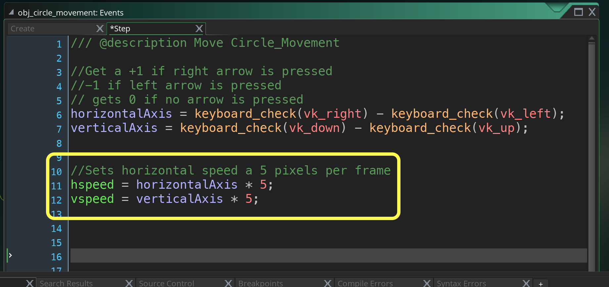
Run the game again by pressing the  Play Button. Press the left, right, up and down arrow on the keyboard. Now the circle moves around the screen. But woops it can go off screen and disapear.
Play Button. Press the left, right, up and down arrow on the keyboard. Now the circle moves around the screen. But woops it can go off screen and disapear.
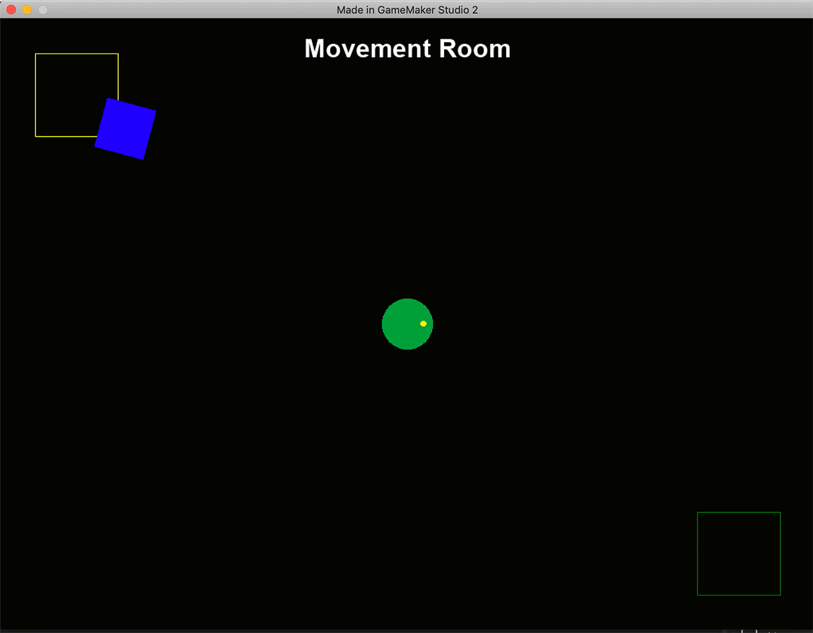
Since the entire level is in this one window we can wrap the player when it goes off screen. GameMaker has built in functions for a lot of very common game issues and this is one of them. move_wrap(hor, vert, margin)
The hor and vert are booleans so you can set it to wrap just vertically or horizontally. The margin adjusts so that the sprite has to be offscreen by so many pixels. In our case it is only completely off screen when half the sprite_width is off screen.
Add the following to obj_circle_movement: Step event script:
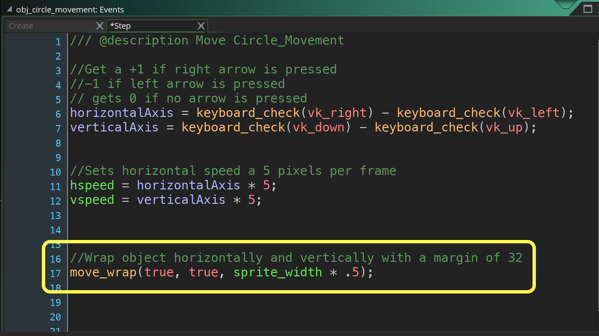
Run the game again by pressing the  Play Button. Press the left, right, up and down arrow on the keyboard. Now go off screen both horizontally and vertically and it reappears on the other side. Works like a charm!
Play Button. Press the left, right, up and down arrow on the keyboard. Now go off screen both horizontally and vertically and it reappears on the other side. Works like a charm!
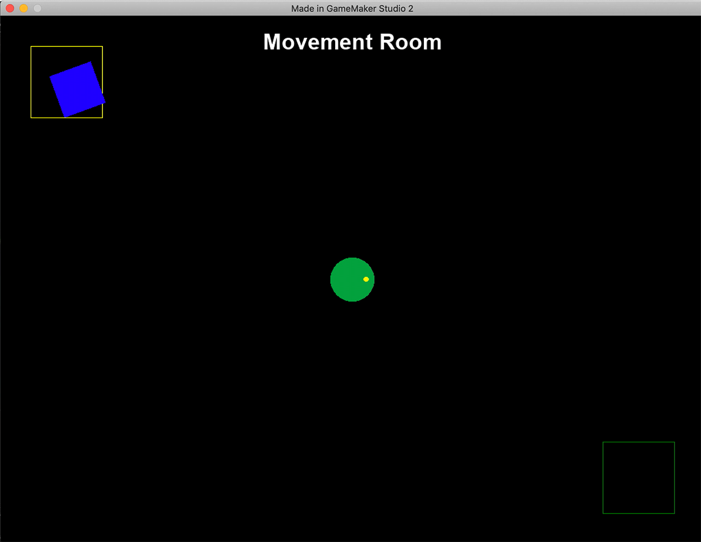
Now lets have the player character look at the direction it is moving in. Now we want the player's image_angle to face the direction the player is moving in. There is a variable called direction that has the angle of the speed of the player (the addition of the hspeed and vspeed).
All instances in GameMaker Studio 2 have certain "built in" properties that you can use and set to govern how they look and behave. Direction is one of those properties and can be used to set the direction of movement of the instance when the instance has a speed other than 0. Note that directions in GameMaker Studio 2 are usually calculated as 0° being right, 90° being up, 180° being left and 270° being down. - GameMaker Manual
Add the following to obj_circle_movement: Step event script at the bottom:
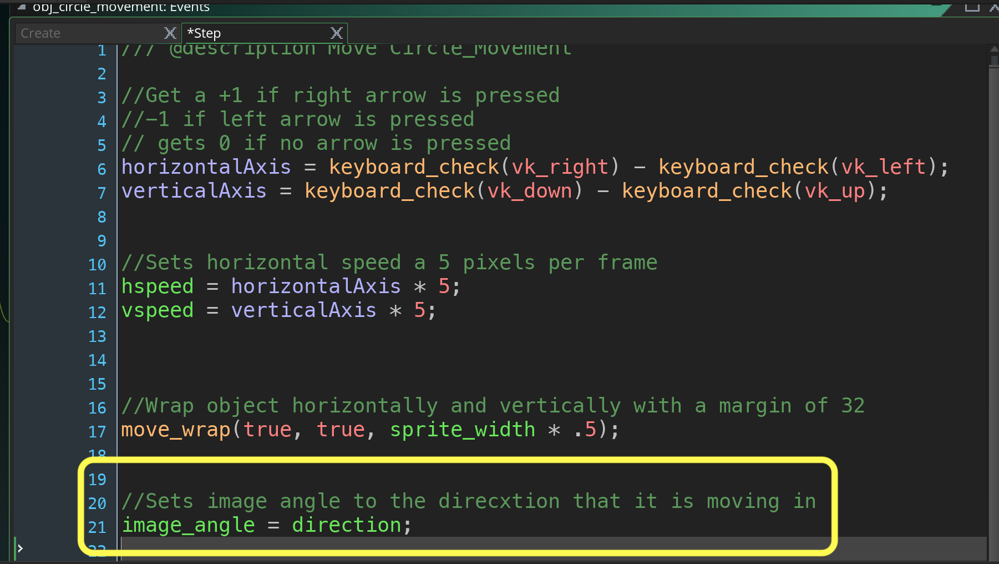
Run the game again by pressing the  Play Button. This is as much as we will do for now. We have introduced a lot of basic functionality in GameMaker. Now go make a great game!
Play Button. This is as much as we will do for now. We have introduced a lot of basic functionality in GameMaker. Now go make a great game!